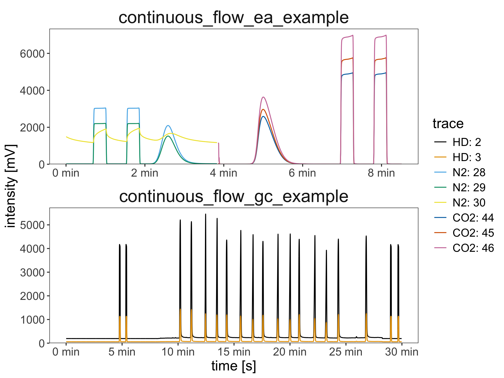

Overview
This package provides easy access to common IRMS (isotope ratio mass spectrometry) file formats, enabling the reading and processing of stable isotope data directly from the data files for platform-independent (Windows, Mac, Linux), efficient, and reproducible data reduction.
isoreader2 succeeds the isoreader package with a completely new architecture built around the isoextract command-line tool. This makes isoreader2 signifcantely faster, and more versatile with support for the following file formats:
| Extension | Measurement type | Produced by |
|---|---|---|
.dxf |
Continuous flow | Thermo Fisher Isodat |
.cf |
Continuous flow (legacy) | Thermo Fisher Isodat |
.bch |
Continuous flow | SerCon Callisto |
.iarc |
Continuous flow | Elementar IonOS |
.larc |
Continuous flow | Elementar LyticOS |
.imexp* |
Continuous flow | Thermo Fisher Qtegra |
.did |
Dual inlet | Thermo Fisher Isodat |
.caf |
Dual inlet (legacy) | Thermo Fisher Isodat |
.scn |
Scan | Thermo Fisher Isodat |
* the first step of reading Qtegra notebooks (extraction of the virtual file system) requires a Windows computer at present but we’re working on a solution that works on all major operating systems
Installation
isoreader2 is not yet on the Comprehensive R Archive Network (CRAN) but you can install the latest version from GitHub as shown below. If you are on Windows, make sure to install the equivalent version of Rtools for your version of R (e.g. for the latest R 4.5 and 4.6, use RTools4.5 - you can find out which version you have with getRversion() from an R console).
# checks that you are set up to build R packages from source
if (!requireNamespace("pkgbuild", quietly = TRUE)) {
install.packages("pkgbuild")
}
pkgbuild::check_build_tools()
# installs the latest isoreader2 package from GitHub
if (!requireNamespace("pak", quietly = TRUE)) {
install.packages("pak")
}
pak::pak("isoverse/isoreader2")
# check/install isoextract
isoreader2::ir_check_isoextract()Show me some code
Read data files
# load library
library(isoreader2)
Loading required package: ggplot2
# provide the path to your data folder here:
# for this example, we use the example files bundled with the package
data_folder <- ir_examples_folder()
# to use your own data instead, comment in this this line (remove the '#')
# and adjust the path to point to your data folder(s)
# data_folder <- file.path("project", "data")
# and search for continuous flow files (all known file types) in that folder
file_paths <- ir_find_continuous_flow(data_folder)
# for this example, we use the example files bundled with the package
# instead (remove this line if working with your own data)
file_paths <- ir_examples_folder() |> ir_find_continuous_flow()
# read the files
isofiles <- file_paths |> ir_read_isofiles()
# show information about the files
isofiles
# aggregate the data from the read files specifying which units to use
# (mV, V, nA, A, cps, etc.), conversion via resistor values happens automatically
dataset <- isofiles |> ir_aggregate_isofiles("mV")
# show the available data that was aggregated metadata is all the available
# sequence information from the different file types
dataset
# plot the data with the default plotting settings
dataset |> ir_plot_continuous_flow()
plot of chunk unnamed-chunk-3
Export the data
# the file metadata
dataset |>
ir_export_to_excel(
include = c("metadata", "traces"),
file = "my_export.xlsx"
)Getting help
If you encounter a bug, please file an issue with a minimal reproducible example on GitHub. Example files are very helpful for fixing bugs so please consider including an example data file (you will have to attach it as a zip archive).
isoverse 
This package is part of the isoverse suite of data tools for stable isotopes. If you like the functionality that isoverse packages provide, please help us spread the word and include an isoverse or individual package logo on one of your posters or slides. All logos are posted in high resolution in this repository. If you have suggestions for new features or other constructive feedback, please let us know on this short feeback form.
Funding 
This project is supported by a grant from the US National Science Foundation (EAR-2411458) to Sebastian Kopf.